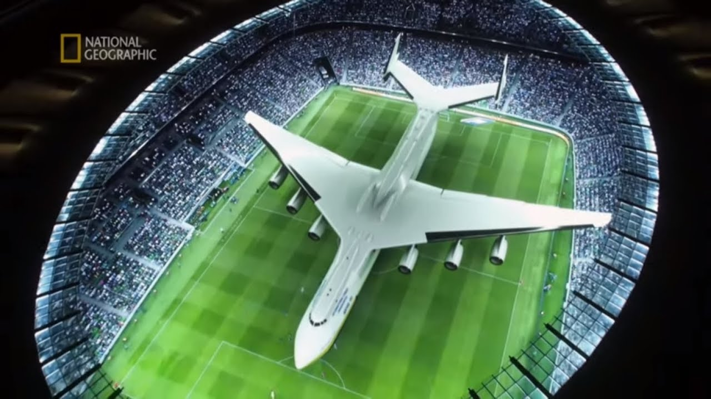

Są to samoloty dostosowane głównie to przewozu towarów. Współczesne samoloty transportowe, w zależności od typu, mogą unieść od 40 do 250 ton ładunku. Należy też pamiętać, iż ładowność samolotu jest zmienna, gdyż zależy od odległości, jaką ma on do pokonania bez tankowania. Załadunek musi mieć odpowiednie wymiary wymuszone przez konstrukcje samolotu. Aby taki samolot mógł wystartować potrzeba pasa startowego odpowiedniej długości. Największym samolotem transportowym na świecie jest An-225 Mrija


Tu możesz dowiedzieć się więcej o samolotach transportowych.